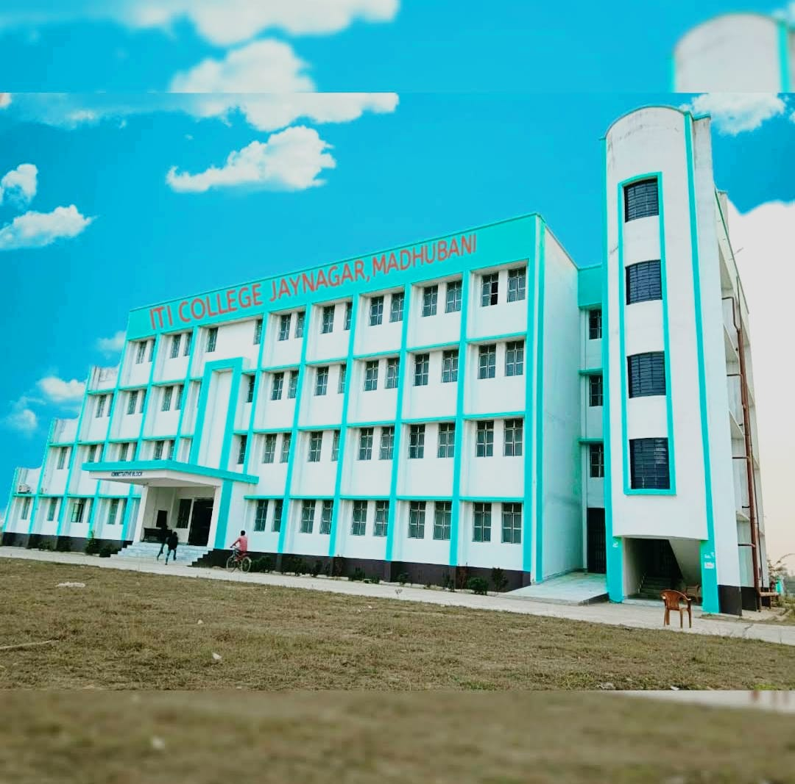

GOVERNMENT ITI JAINAGAR
Welcome To Government ITI Jainagar

PRINCIPAL: SHAHID ANWAR
This is a Government Industrial Training Institutes. It is located in Jainagar Madhubani, Bihar. It has Six Trades.